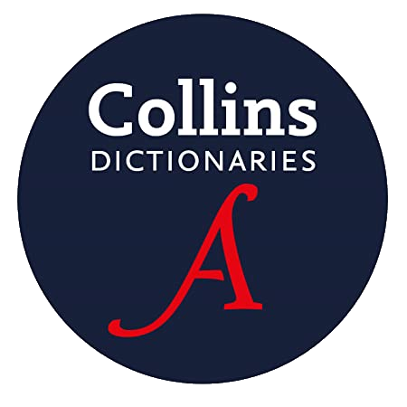
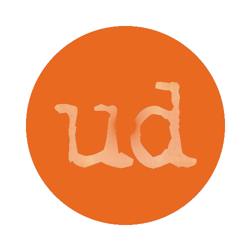

Merriam-Webster, America's leading lexicographic publisher, was founded in in 1831 by George and Charles Merriam and is considered the oldest publishing house in the United States. The website was launched in 1996 and has been regularly updated since then, providing an extensive record of American language.
Merriam-Webster, America's leading lexicographic publisher, was founded in in 1831 by George and Charles Merriam and is considered the oldest publishing house in the United States. The website was launched in 1996 and has been regularly updated since then, providing an extensive record of American language.
The dataset prepared by Oxford contains updated versions of the Oxford Dictionary of English and the New Oxford American Dictionary. The main objective of the former is to faithfully portray English language as it is used contemporarily. The latter concentrates on the accurate representation of American English. The repository includes over 350,000 entries and is updated on a regular basis.
The beginning of Collins Dictionary is marked by the publication of Donnegan’s Greek and English Lexicon in 1824. The online version became available to the public in 2007. Submissions from the public allow the publisher to provide up-to-date information, including contemporary slang and newly coined terms.
 Wiktionary is a collaborative web-based project that started in 2002. The main objective of the project is to create a free multilingual dictionary. All entries in Wiktionary are contributions submitted by volunteers.
Wiktionary is a collaborative web-based project that started in 2002. The main objective of the project is to create a free multilingual dictionary. All entries in Wiktionary are contributions submitted by volunteers.
Urban Dictionary is an online dictionary for English slang initiated in 1999 by Aaron Peckham. The project is crowdsourced, reaching approximately 2000 new entries everyday.